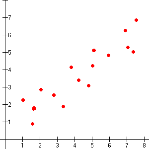

Linear Discriminant Analysis
Analysis – We have at least two sets of data, and we want to classify (i.e. analyze) incoming data according to the stimulus that produced it.
- Did the neuron firing rate we recently recorded result from the monkey touching a hot stove or an ice cube?
- Did our new data come from the red distribution or the blue distribution (above diagram)?
Discriminant – In order to discriminate (i.e. categorize) incoming data, we need to decide on our cutoffs between each category.
- To make this process easier, we assume that the data in every category are distributed as multivariate Gaussian distributions with the same variance.
- Thus, as with the distributions of the three data sets shown below, the points of any data set are just a shifted version of any other data set.
Quantifying LDA
Linear – If our distributions are actually all shifted version of the same Gaussian shape, then dividing them up with lines is an effective means of classifying.
- Draw a strict line in the proverbial sand – The line is the boundary. Every point that lands on the left side of the line is in category red. Every point on the right is category blue.
- As with MAP estimation, LDA takes priors into account. In the top picture, if category red is historically much more likely than category blue, we push the line farther over into blue territory, assuming we are more likely to see red in the future.

Practice Questions
What does LDA stand for?
In LDA, we assume every data set’s distribution to have the same _____ but possibly different ______.
In LDA, what distribution do we assume every data set follows?
Quantifying LDA
We know we need to draw a line between our two categories’ distributions. Where should the line go?
Intuitively, since this line will be our decision boundary between the two categories, it should correspond to the points at which the likelihood of either category is equally likely. If our data falls on this line, then we don’t know how to classify it. It could just as easily be category ‘hot stove’ as category ‘ice cube.’
To find all the points where the likelihood of each category is equal, we first need a function that takes a category and returns the likelihood of that category. For example, if we call this function f, then f(‘ice cube’) might return 0.57, telling us that the probability the monkey touched an ice cube is 0.57 (given the distributions we already have for ‘hot stove’ and ‘ice cube’).
WARNING: Math ahead. It’s worth the effort.
Quantifying LDA
Since we assumed that our categories are distributed as multivariate Gaussians (the pictures above), this likelihood function is essentially just this distribution’s probability density function with the category as the parameter rather than the value:
where is the prior probability of the category, k is the distribution’s number of components (‘multi’ in ‘multi-variate’ may mean 2, 3, 4…), x is our vector of data (‘hot stove’ and ‘ice cube’ data, for example), and
is the category’s mean.
This expression looks messy and has lots of variables to keep track of. Let’s try to simplify it for our application.
Our goal is to find the category C with the largest likelihood. In other words, we want the value of C for which f(C) is maximized (i.e., argmax(f(C))). As a result, we can remove from f any terms that our constant for all values of C, as these terms won’t affect the function’s relative maximum.
Thus, we’ve shaved down our function to
Quantifying LDA
Can we do even better? Of course we can, or we wouldn’t be asking.
Remember once again that we only need to find the value of C which maximizes the output of f. If we think very hard, we’ll eventually realize that taking the of f won’t change the maximizing C value because is a monotonically increasing function. Furthermore, it will make our lives much easier, because we won’t have compute the value of e raised to a power anymore.
If we think even harder about linear algebra (which we won’t make you do for now), we can simplify this expression to
Great! We have a fairly simple function that takes a category and returns the likelihood of that category. Since we may have many categories to consider, let’s generalize its naming scheme. For a data set x and category C, we’ll rename to
.
Quantifying LDA
What should we do with our function? Remember that we want to draw a line between two categories where each is equally likely.
If we name our categories ‘hot stove’ and ‘ice cube’, then we have two functions for any given data set x: and
. Now we want the line of values in our data set x for which these two categories’ likelihoods are equal.
Therefore, moving all the terms to the left side, our final boundary equation is
What is this equation telling us? If we provide it values for our categories’ means (), covariances (
), and prior probabilities (
), then it will tell us the values x in our dataset for which the likelihoods of our two categories are equal. We have our line!
Practice Questions
Consider the following graph:
If we learn that both the mean x and mean y values of the blue category decrease, which way does the decision boundary line move?
If we learn that the blue and red distributions have different variances, can we still perform LDA analysis?
Practice Questions
Consider the following graph in which the distribution of red values exhibits positive correlation:
